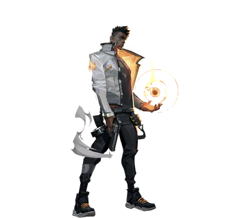
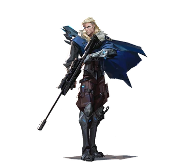
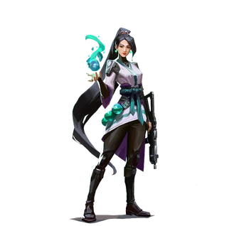

The composition of your team is crucial to your teams success on certain maps. Each agent has unique abilities
that play a specific role. The four categories are split into duelists, initiators, sentinels and
controllers.There are currently a total of 18 agents, each reigning from a different country. This table details
the starting 5 agents you will have unlocked when you first start playing. To unlock other agents, you need to activate their contract and play more to earn XP.
Duelists: Duelists are self-sufficient fraggers who their team expects, through abilities and skills, to get
high frags and seek out engagements first.
Initiators: Initiators challenge angles by setting up their team to enter contested ground and push defenders
away.
Sentinels: Sentinels are defensive experts who can lock down areas and watch flanks, both on attacker and
defender rounds.
Controllers: Controllers are experts in slicing up dangerous territory to set their team up for success.
| Agents | Category & Description | Abilities | Photo/Trailer |
|---|---|---|---|
| Brimstone | Controller. Joining from the USA, Brimstone's orbital arsenal ensures his squad always has the advantage. His ability to deliver utility precisely and from a distance make him an unmatched boots-on-the-ground commander. |  |
|
| Jett | Duelist. Representing her home country of South Korea, Jett's agile and evasive fighting style lets her take risks no one else can. She runs circles around every skirmish, cutting enemies before they even know what hit them. |  |
|
| Phoneix | Duelist.Hailing from the U.K., Phoenix's star power shines through in his fighting style, igniting the battlefield with flash and flare. Whether he's got backup or not, he'll rush into a fight on his own terms. |  | |
| Sova | Initiator. Born from the eternal winter of Russia's tundra, Sova tracks, finds, and eliminates enemies with ruthless efficiency and precision. His custom bow and incredible scouting abilities ensure that even if you run, you cannot hide. |  | |
| Sage | Sentinel.The bastion of China, Sage creates safety for herself and her team wherever she goes. Able to revive fallen friends and stave off aggressive pushes, she provides a calm center to a hellish fight. |  |